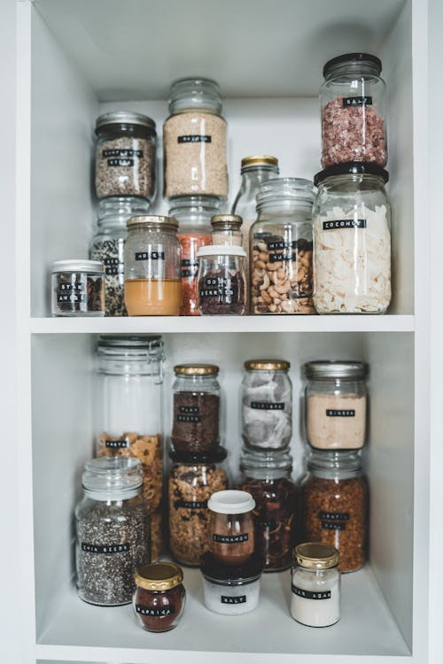
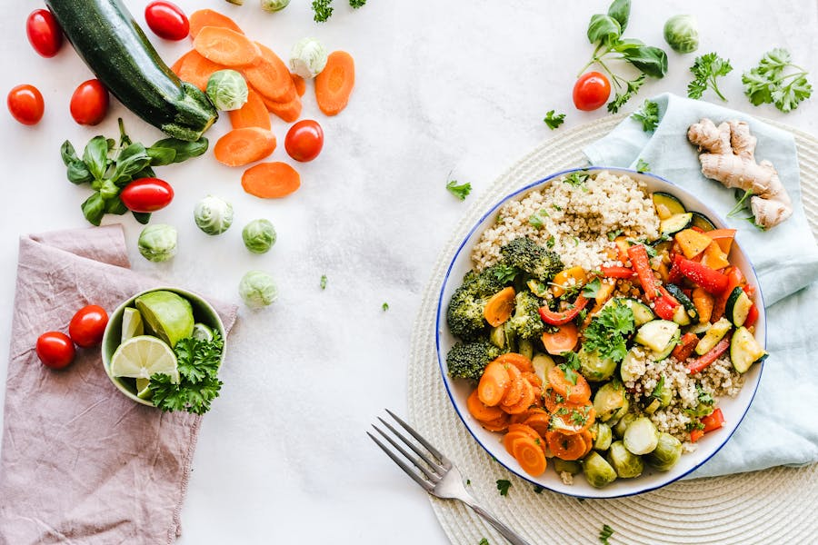

Disclosure
Some links in this article are Amazon affiliate links. If you purchase through them, we may earn a small commission at no extra cost to you. See our full disclaimer.

Dehydrating vegetables is one of the most practical food preservation methods available to off-grid households and anyone building a serious long-term pantry. It requires minimal ongoing cost (electricity plus produce), produces food that is shelf-stable for 12 to 18 months at room temperature in glass jars — and considerably longer with oxygen absorbers — and retains a useful proportion of the original nutritional content.
This guide covers the complete process: why dehydration works, what equipment you need, how to prepare each vegetable type, the temperature and time settings that produce reliable results, how to verify the food is fully dry, the conditioning process that prevents spoilage in the jar, and how to pack and store your finished product. We include a detailed temperature and time reference table. Everything in this guide is based on what we have tested in the workshop over multiple seasons of production.
Why Dehydrate Vegetables
Shelf life. Fresh vegetables last days to weeks at best. Properly dehydrated and stored vegetables last 12 to 18 months in sealed glass jars at room temperature, and two to four years with oxygen absorbers in a cool, dark environment. For off-grid households that depend on seasonal harvests or irregular supply chains, that stability is genuinely valuable.
Nutrition retention. Dehydration compares favorably to other preservation methods on most nutrients. Water-soluble vitamins (C and some B vitamins) are reduced more significantly in dehydration than in freezing, but the process retains minerals and most other nutritional content well. The fiber content is entirely preserved. Compared to canned vegetables — which typically undergo high-heat processing — dehydrated vegetables hold more of their original vitamin profile.
Space efficiency. Dehydrating removes 80 to 95% of the water weight from vegetables. Eight pounds of raw carrots yields roughly one to 1.2 pounds of dried product, which packs into a single quart mason jar. The same nutritional load that requires three cubic feet of refrigerator space occupies a fraction of a single shelf when dried.
No refrigeration required. Once properly dried and sealed, dehydrated vegetables need no cold storage, no ongoing energy expenditure, and no special infrastructure. A dark shelf in a cool room is all that is required.
Equipment You Will Need
You do not need much, but what you do need matters. Low-quality equipment produces inconsistent results.
- A food dehydrator with adjustable temperature. The most important piece of equipment. Different vegetables require different temperatures — a machine that only runs at one setting will under-dry some foods and over-cook others. We use and recommend the Excalibur 3926TB, which provides a 105°F to 165°F range, genuine horizontal airflow that eliminates tray rotation, and enough capacity (15 sq ft) to process a meaningful batch in one session.
Excalibur 3926TB Dehydrator — Buy on Amazon:
Check Price on Amazon →Affiliate link — we may earn a commission. See our disclaimer.
- A mandoline slicer. Consistent slice thickness is important — uneven slices dry unevenly, leaving some pieces under-dried (which spoil in the jar) while others are over-dried and brittle. A mandoline set to 3–5mm produces reliable uniformity. A sharp chef's knife and practice can substitute, but the mandoline is faster and more consistent.
- Wide-mouth quart mason jars. Wide-mouth jars allow better airflow during the conditioning process and make packing and retrieving dried vegetables easier. We use quart jars for most vegetables — pint jars for high-density items like dehydrated onion where a little goes a long way.
Wide-Mouth Quart Mason Jars — Buy on Amazon:
Check Price on Amazon →Affiliate link — we may earn a commission. See our disclaimer.
- Oxygen absorbers (300cc). A single 300cc oxygen absorber per quart jar removes residual oxygen from the sealed jar and significantly extends shelf life — from 12–18 months to two years or more at room temperature. They are inexpensive per unit and add meaningfully to storage stability.
- A vacuum sealer with jar attachment (optional but useful). A handheld jar vacuum sealer removes additional air from mason jars before storage. Not strictly necessary if you use oxygen absorbers, but useful for jars you plan to store long-term without the chemical oxygen absorption method.
- A digital kitchen scale. Measuring before and after drying lets you calculate actual moisture removal and verify that the batch reached acceptable dryness. A 5 lb batch of carrots that yields only 500g instead of the expected 700–800g has likely been over-dried; one yielding 1,200g may still contain moisture.
How to Prepare Vegetables for Dehydration
Washing. All produce should be washed thoroughly. We wash under running water and scrub root vegetables with a vegetable brush. No special vegetable wash is necessary for produce that will be dehydrated — the drying process removes the water and concentrates everything else, so thorough initial cleaning matters.
Peeling. Peeling is a matter of preference and vegetable type. We peel carrots, beets, and squash. We do not peel zucchini, bell peppers, or tomatoes — the skin holds structural integrity during drying and causes no texture problems in the finished product. Corn is shucked. Kale and greens are destemmed.
Slicing thickness. Thinner slices dry faster and more evenly. The practical range for most vegetables is 3mm to 6mm. Below 3mm produces a product that is very brittle and loses significant texture. Above 6mm significantly extends drying time and increases the risk of case hardening (where the exterior dries and seals before interior moisture can escape).
Blanching. Blanching is the process of briefly boiling or steaming vegetables before drying. It is not universally required but is recommended for vegetables that oxidize (turn brown) or lose color quickly, and for vegetables with a tough cellular structure. The heat deactivates enzymes that would otherwise continue to break down the food during and after dehydration.
| Vegetable | Blanching Required? | Blanching Method |
|---|---|---|
| Carrots | Recommended | Steam 3–4 min, or blanch in boiling water 2–3 min |
| Zucchini | Optional | Steam 2 min if desired for softer final texture |
| Bell Pepper | Not required | Skip — raw dehydration produces excellent results |
| Tomato | Not required | Skip — raw dehydration works well |
| Onion | Not required | Skip — raw dehydration preserves pungency better |
| Corn | Required | Blanch cob 4–6 min before cutting kernels |
| Kale / Greens | Not required | Skip — raw dehydration produces crisp chips |
After blanching, cool vegetables immediately in an ice bath to stop cooking, then pat dry before loading trays. Excess surface water extends drying time and reduces airflow efficiency in the dehydrator.
Temperature and Time Reference Guide
The following table reflects settings we use consistently on the Excalibur 3926TB. Times assume 3–5mm slices, a full tray load (but not overcrowded — single layer), and relatively fresh produce at normal moisture levels. Higher-moisture produce, thicker slices, or a fuller-than-normal tray load will push times toward the upper end of the range.
| Vegetable | Prep Notes | Temperature | Drying Time | Expected Weight Loss | Glass Jar Shelf Life |
|---|---|---|---|---|---|
| Carrots | Sliced 3mm, blanch recommended | 125°F (52°C) | 8–12 hours | ~85% | 12–18 months |
| Zucchini | Sliced 4mm, skin on | 125°F (52°C) | 6–10 hours | ~90% | 12 months |
| Bell Pepper | Rings or strips, no seeds | 125°F (52°C) | 8–12 hours | ~90% | 12–18 months |
| Tomato | Halved or 6mm slices, cut-side up | 135°F (57°C) | 8–15 hours | ~92% | 9–12 months |
| Onion | Rings or diced, 3–4mm | 145°F (63°C) | 6–12 hours | ~92% | 12–18 months |
| Corn | Kernels, cut from blanched cob | 130°F (54°C) | 8–12 hours | ~75% | 12 months |
| Kale | Destemmed, torn to pieces | 125°F (52°C) | 4–6 hours | ~90% | 6–9 months |
Note on Tomatoes
Tomatoes have the highest natural moisture content in this list and are the most variable in drying time. A Roma tomato halved and placed cut-side up may take 8 hours in summer (lower initial moisture) or 14–15 hours from a wet autumn harvest. Check at 8 hours and add time in one-hour increments. Leather-dry is the target — pliant but not sticky.
How to Check for Dryness
Visual inspection alone is insufficient. The most reliable method is the snap test: remove a piece from the dehydrator and let it cool to room temperature for two to three minutes (warm food is softer than it will be at ambient temperature). Then bend or break it. Properly dehydrated vegetables should snap cleanly rather than bend. If the piece bends without snapping or feels leathery at room temperature, it needs more time.
Secondary indicators:
- No moisture on the surface or when pressed. Press a piece firmly between your fingers. Any moisture transfer to your fingers means the piece is not done.
- Weight check. If you weighed the batch before loading, a completed carrot batch should weigh approximately 15% of its raw weight. Any reading meaningfully above that suggests remaining moisture.
- Structural integrity. Fully dried vegetables are rigid. Partially dried vegetables have a flexibility that becomes obvious once you have handled fully dried batches enough times to recognize the difference.
When in doubt, add time. A piece that is over-dried loses some texture and nutritional density but does not cause spoilage. A piece that is under-dried and packed in a jar is a spoilage risk for the entire batch.

The Conditioning Process
Conditioning is the step that most guides skip and that most spoilage events can be traced back to skipping. After the dehydrator run is complete, dehydrated vegetables are not immediately ready to pack. They need a conditioning period.
Why conditioning matters: Even in a properly calibrated dehydrator, individual pieces within a tray load dry at slightly different rates due to variation in slice thickness, water content, and position. The conditioning process allows moisture to equalize across all pieces in a batch before final sealing.
The process:
- Allow all pieces to cool completely to room temperature — at least 30 minutes after the dehydrator finishes.
- Pack loosely (not compressed) into clean, dry glass jars. Do not seal with lids yet.
- Cover the top with a clean cloth or paper towel held in place with the ring only — no flat lid, to allow air exchange.
- Leave at room temperature for 7 days. Shake or gently agitate the jar once daily.
- Each time you shake the jar, check the interior glass for any condensation. Any visible moisture on the glass means the batch was under-dried and needs to go back into the dehydrator for additional time before conditioning restarts.
- After 7 days with no moisture condensation and consistent dry texture on all pieces, the batch is ready to seal.
This process takes patience. Skipping it — or shortening it to two or three days — is the most common cause of mold developing in a sealed jar of otherwise properly dehydrated vegetables.
Packaging in Glass Jars
Once conditioning is complete, packing is straightforward but a few details matter for maximizing shelf life.
Oxygen absorbers. Before sealing each jar, drop one 300cc oxygen absorber on top of the packed vegetables. Seal immediately with a new flat lid and ring. The absorber will remove residual oxygen from the headspace within 24 hours, creating a near-anoxic environment that inhibits oxidation and microbial activity. Use oxygen absorbers within 15 minutes of opening the package — they begin absorbing immediately on exposure to air.
Vacuum sealing (optional). A handheld jar vacuum sealer (the type with an attachment that fits wide-mouth lids) removes additional air before the oxygen absorber completes its work. This is a belt-and-suspenders approach that is particularly useful for high-value batches or jars intended for very long-term storage (two years or more).
Labeling. Every jar should be labeled before it goes to the shelf. Include: vegetable name, date dehydrated, and — if you tracked it — the starting raw weight. We write directly on the lid with a paint pen and clean the lid with acetone before reuse. Masking tape labels fall off in humid environments; adhesive labels are adequate but less durable.
Jar fill level. Leave about one inch of headspace at the top of the jar. This is particularly important if you are using a vacuum sealer — it needs clearance to create a proper seal. Overfilling prevents a clean vacuum seal and compresses the vegetable pieces, which can crack brittle items like kale or dried greens.
Storage Conditions
Dehydrated vegetables in sealed glass jars require three conditions to achieve the advertised shelf life:
- Dark. Light — especially UV light — degrades color, vitamins, and flavor over time. Glass jars do not block light. Store in a closed cabinet, pantry, or root cellar. If shelving is open, wrap jars in a cloth sleeve or line the shelf with an opaque board. Dark storage at room temperature is better than bright storage at a lower temperature.
- Cool. The target storage temperature is below 70°F (21°C). Every 10°F reduction in storage temperature approximately doubles the shelf life of dehydrated food. A basement or root cellar at 55–65°F extends the 12–18 month room-temperature shelf life to two or more years. Do not store near ovens, water heaters, or exterior walls that experience temperature swings.
- Dry. Glass jars are not permeable to humidity if sealed properly, but the environment around them matters. High humidity accelerates lid corrosion and can cause the flat lid seal to degrade over time. If your storage area runs above 60% relative humidity consistently, consider adding a silica gel packet to the storage space (not inside the jar — outside).
Shelf Life Summary
Glass jar, properly sealed, no oxygen absorber: 12–18 months in a dark, cool location.
Glass jar, sealed, with 300cc oxygen absorber: 2–3 years in a dark, cool location.
Glass jar, vacuum sealed, with oxygen absorber, below 65°F: 3–5 years. These figures are based on consensus across the USDA's recommendations and documented homesteader testing, with some vegetables (tomatoes, kale) at the shorter end and root vegetables (carrots, onions) at the longer end.
Tips for Best Results
- Process one vegetable type per session. Different vegetables require different temperatures. Do not run kale (125°F) and onions (145°F) on the same dehydrator run — the lower trays will be wrong for one or the other.
- Do not overcrowd trays. A single layer of vegetable pieces with small gaps between them is the target. Overlapping pieces trap moisture between surfaces and dramatically extend drying time. The extra trays in a 9-tray unit exist so you can use all of them at a single layer rather than overfilling fewer trays.
- Check toward the end of the time range, not the beginning. Set a timer for the low end of the range, then check every hour. Pulling the batch early and finding it done is better than leaving it unmonitored and over-drying.
- Process seasonal gluts, not old produce. Dehydrating extends shelf life from the point of drying, not from the point of harvest. A zucchini that was already soft and past its prime before dehydration will produce an inferior end product. Dehydrate at or near peak freshness.
- Rotate your stock. Even with oxygen absorbers, dehydrated vegetables are not indefinitely shelf-stable. Use a first-in, first-out system. Place new jars at the back of the shelf and pull from the front. Record the dehydration date on the label and pay attention to it.
- Rehydrate properly before cooking. Most dehydrated vegetables rehydrate well in a 1:2 ratio (1 cup dried to 2 cups water) with a 15–30 minute soak in cold water, or they can be added directly to soups and stews where they rehydrate during cooking. Do not add dehydrated vegetables dry to a dish with very limited liquid — they will absorb water from the dish and may leave other ingredients undercooked.
Related Guides and Reviews
We have documented our results on the seven vegetables in the table above. If you have drying data for other vegetables — sweet potatoes, beets, green beans, asparagus — share your temperature settings and times. The more real-world data available, the more useful this reference becomes.